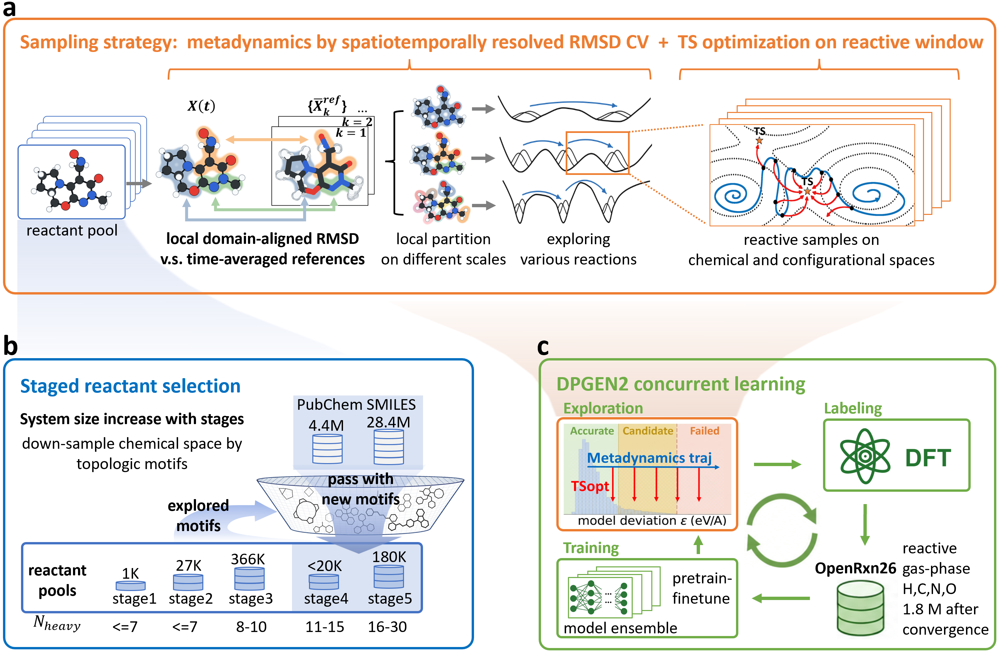
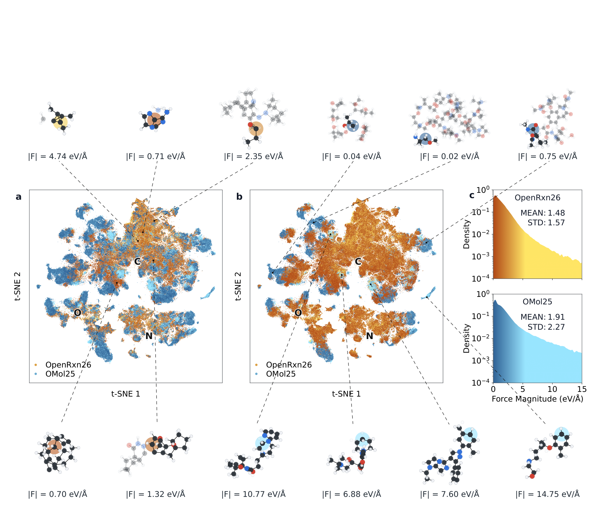
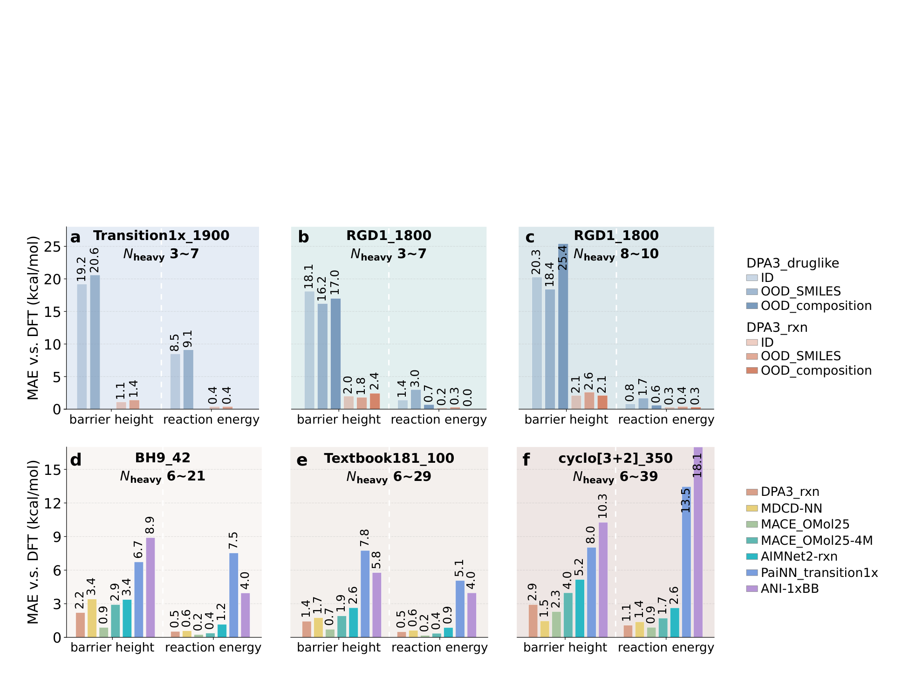
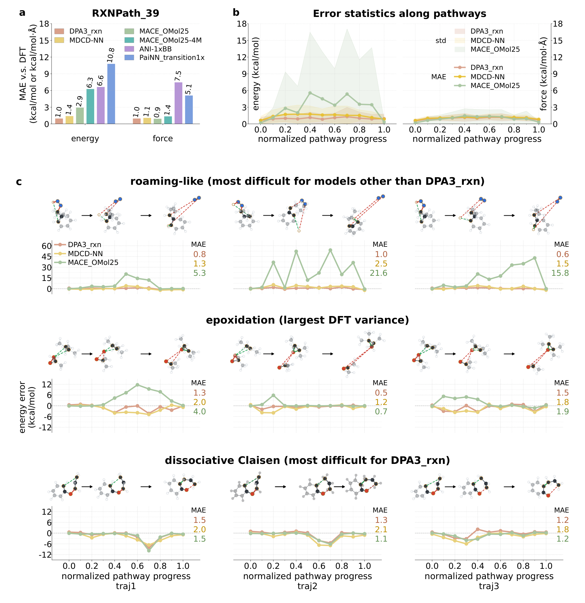

OpenRxn26：让反应训练数据覆盖原子真正运动时会经过的构型
论文原文 ↗原文：Wanrun Jiang、Jinzhe Zeng、Manyi Yang、Tong Zhu、Han Wang，A System-Independent Metadynamics Strategy for Reactive Training Data: Application to Gas-Phase Organic Reactions，arXiv:2609.29105v1，2026年9月24日。本文依据67页预印本，第51—67页为内嵌补充材料。
一个机器学习势能模型能够准确预测反应物、过渡态和产物，为什么拿它跑分子动力学仍可能失败？因为原子运动不会严格沿着优化出来的最低能路线前进。原子带着速度，振动和转动彼此交换能量；某根键已经断开，另一根可能还没来得及形成，碎片也可能暂时远离。这些构型若没有出现在训练中，模型就可能给出错误的能量和力，把后续运动推向更不合理的区域。
本文针对这一数据缺口，设计了不需要为每个分子指定“断哪根键”的反应探索方法。它用局部几何变化驱动元动力学，再通过主动学习选择值得做量子化学计算的构型，生成180万份能量与力标签组成的OpenRxn26。关键问题随之变得明确：新数据既要让模型会算静态势垒，也要让它在偏离最低能路径的构型上可靠。
一、方法怎样做：从已停留的几何出发，推动分子探索新的运动
为什么不能只把最低能路径采得更密
势能面描述原子坐标与体系能量的关系。反应物和产物通常位于能量盆地，过渡态是连接盆地的一阶鞍点；最低能路径（MEP）是穿过过渡态、连接两端的低能路线。常见反应数据依靠路径优化、约束键长扫描或过渡态附近振动采样生成。优化会消除不必要的变形，因此数据容易聚集在MEP附近，未必包含真实运动中的滞后成键、松散接触或大幅度局部重排。
机器学习原子间势（MLIP）接收元素和三维坐标，利用每个原子邻域内的几何环境预测总能量，再由能量对坐标的梯度得到力。模型无需知道反应名称，但必须在训练中接触过足够丰富的局部环境。把同一条优化路线采得更密，可以提高已有区域精度，却不一定拓宽覆盖范围。（PDF第3—7、20页）
通用几何变量：既看局部重排，也过滤快速振动
普通分子动力学容易困在一个盆地。元动力学的做法是在已经访问的区域添加历史依赖偏置，把那里逐渐抬高，推动体系离开。实施时需要集体变量（CV），即把许多原子坐标压缩成用于添加偏置的少数数值。已知反应可选择关键键长，但面对任意分子的未知反应，手工指定关键键并不现实。
作者用均方根位移（RMSD）衡量当前构型与过去参考几何的差异。比较前先进行最佳刚体对齐，去除整个分子的平移和转动。这样，分子只是在空间中转身不会被误认成内部重排。参考几何列表随轨迹增长，偏置促使体系离开已经停留过的构型。
关键改进有两个。第一，把分子按空间半径随机划为局部区域，各区域分别对齐、计算RMSD，再聚合。大分子若只有几处原子正在断成键，整体位移容易被大量不动原子稀释；局部分域让这种变化保留下来。不同半径并行探索，也能同时响应局部键变化和较大范围运动。第二，用一段时间内平均的几何作参考，削弱快速热振动，避免偏置主要追逐高频噪声。当前构型仍是瞬时坐标，平均的是过去的参考中心。（第10—11、16—18页）

图1｜原文Figure 1，PDF第9页。a中局部区域与时间平均参考提供偏置变量，动态快照另可启动过渡态优化；b从小分子逐阶段扩展反应物池；c由模型间力预测分歧选择DFT标注，再更新模型。动态采样与过渡态补点在筛选阶段汇合。
动态快照与过渡态补点，分别补不同的数据缺口
从反应物池取一个分子并建立三维构型后，元动力学在当前模型的势能面上运行，产生包括构象变化和成断键事件的轨迹。作者检测能量陡降且出现新成断键对的“反应窗口”，保存其中快照。一部分快照直接作为动态候选；另一部分启动二聚体法过渡态搜索。二聚体法利用两个相近构型估计局部曲率，朝鞍点优化，再从优化轨迹稀疏取点。
保留这条优化分支的原因很具体：过渡态附近空间窄、轨迹停留短，纯动力学可能采得不足。因此作者既保存宽广动态构型，也补足过渡态邻域，没有把所有快照重新优化回MEP。（第11页）
随后进入DPGEN2主动学习循环。四个模型在相同数据上用不同随机种子训练，一个负责探索，四个都预测新构型的原子力。若预测彼此接近，说明该环境大致已覆盖，跳过重复标注；分歧适中的候选送去DFT；分歧过大的构型视为可能不合理并丢弃。选出的构型用ωB97X-D/6-31G(d,p)计算能量和力，加入训练，再开始下一轮。断键时可能出现双自由基性质，作者对波函数做稳定性检查，必要时采用破缺对称单重态解。（第12—14页）
反应物选择从小分子扩展到最多30个重原子，即除氢外的原子。大分子数量太多时，作者优先保留引入新环系与连接骨架的分子，并借助26类反应模板考虑可能产物的骨架。这是起始池的化学筛选，与不指定反应机制的几何CV分工不同。最终反应物池约60万种身份，累计180万份构型标签；随后将这些数据与非反应Druglike2025数据混合，训练生产模型DPA3_rxn。（第14—19页）
采样使用恒温目标300 K，但历史偏置不断注入能量；补充消融实验中的实际平均温度约364 K。球形限制防止碎片逃逸，氢质量也被加重以稳定积分。这些设置服务于构型探索，输出标签是无偏置的DFT能量和力，轨迹时间本身不作为真实反应速率。
二、主要结果：数据覆盖、静态反应性质与动态构型分别怎样检验
1. 局部分域带来更有效的探索，也新增了现有模型难描述的环境
补充消融把几何变量分成裸RMSD、仅时间平均、仅局部分域和二者兼具四种形式，在20个反应物、多批初速度下比较每皮秒找到的不同反应路径数。完整方法的全阶段平均效率为0.185条/ps，裸形式为0.081，约提高2.3倍；仅分域已达0.181，说明主要收益来自局部空间分辨。最大分子阶段完整方法约比裸形式高一个数量级。（第51—54页，图S1—S2）
作者随后与大型分子数据库OMol25比较，先匹配H/C/N/O、中性单重态范围，再各抽30万个重原子的邻域特征，将高维表示投影到二维。t-SNE是尽量保留局部相似关系的降维可视化，图上的每个点代表一个原子环境，而非整个反应。

图2｜原文Figure 2，PDF第22页。橙色为OpenRxn26，蓝色为OMol25；a、b交换绘图覆盖顺序，避免后绘制点遮挡造成错觉；c横轴为原子力大小。橙色新增区域包含反应性环境，且并非主要由极大力异常点构成。
真正的检验不止是散点图。作者在OpenRxn26明显占优的区域抽300个碳环境，以MACE_OMol25训练时使用的DFT方法重新标注。该模型目标碳的力分量平均绝对误差（MAE）从自身分布内的0.2增到6.0 kcal mol⁻¹ Å⁻¹，达到30倍；整帧每原子能量误差也从0.020增到0.281 kcal mol⁻¹ atom⁻¹。这些新增环境的力并不比OMol25整体更大，因此结果支持采样找到了现有数据代表不足的反应构型，而非简单把分子压坏制造难例。（第20—26页，表1）
2. 加入反应数据后，静态势垒大幅改善，但并非所有基准都第一
最直接的数据对照使用相同DPA3架构：一份模型只在非反应Druglike2025上训练，另一份加入OpenRxn26。在Transition1x和RGD1的测试反应中，加入反应数据后，势垒MAE从约20降到不超过2.6 kcal/mol，反应能MAE从最高9.1降到不超过0.4。测试进一步区分见过的起始分子身份与未见身份，后者的精度仍相近，表明模型学到的局部环境可迁移到新反应物。（第26—28页）

图3｜原文Figure 3，PDF第27页。a—c比较同架构有无OpenRxn26，浅蓝与橙色柱的变化最能说明数据的作用；d—f比较不同模型在三套反应集合上的势垒与反应能误差，柱越低越好。所有指标为势能差误差。
跨模型比较保留了更细致的结论：在BH9和Textbook181测试上，DPA3_rxn势垒MAE分别为2.2、1.4 kcal/mol，排第二；使用1亿帧OMol25训练的MACE分别为0.9、0.7，更准确。双分子[3+2]环加成更难，DPA3_rxn为2.9，排第三，也超出其以单分子起始池为主的训练范围。各模型均相对于自身训练的DFT层级重新计算参考，因此这项比较衡量的是逼近各自标注方法的能力。（第29—30页）
3. 动态中段改变了排名：会算势垒，未必会描述离路径运动
为检验动态覆盖，作者从Textbook181随机选13个反应，每个构造三条连续轨迹，组成RXNPath39。它采用接力式偏置射击：上一段走得最远的快照成为下一段起点，反应中心初速度朝成断键方向调节。轨迹不必穿过已知过渡态，允许包含高能偏离路线。每条取11个完整构型，共429点。这与构建OpenRxn26的元动力学不同，提供了另一种动态压力测试。（第32—33页）

图4｜原文Figure 4，PDF第31页。a比较429个动态快照上的能量与力误差；b横轴为按成断键距离累计弧长归一化的几何进程，不是时间；c给出游离样氢、氧转移和解离式Claisen重排三组例子，每列是一条轨迹。需留意中段松散构型是否出现大能量误差。
DPA3_rxn总体能量MAE为1.0 kcal/mol，MDCD-NN为1.4，MACE_OMol25为2.9；力MAE则分别为1.0、1.1、0.9 kcal mol⁻¹ Å⁻¹，三者接近，MACE略好。排名反转发生在能量上：静态势垒领先的MACE，动态能量却排第三。（第33页）
误差主要集中在路径中段。DPA3的能量平均误差最高约1.3，而MACE在进程0.4超过5，标准差超过10 kcal/mol。脱氮例子中的氢先脱离N—H键，漂移后再结合；MACE三条轨迹MAE为5.3、21.6、15.8，DPA3为0.8、1.0、0.6。这个高能游离样路线作为压力测试，具体暴露了松散碎片环境中的覆盖缺口。（第33—34页）
作者也展示DPA3最困难的解离式Claisen重排：两个反应位点都离开成键范围时误差增大，一个位点重新结合后又改善。这指向下一类需要补的数据——已经接近、却有多个位点尚未对齐成键的碎片对。换用MDCD-NN或MACE生成测试轨迹后，DPA3的总体能量MAE仍为1.0，主要结论未因路径生成模型改变而消失。（第35—36页）
三、贡献：反应数据的质量取决于怎么生成构型，也取决于怎么测试
OpenRxn26新增的是一套可扩展的反应构型生成路线。通用几何记忆负责未知反应探索，局部分域避免大分子局部变化被平均掉，时间平均减少偏置参考的振动噪声；过渡态优化补上短驻留区域，主动学习再把DFT费用集中到新环境。它将动态探索作为主要数据来源，同时保留静态方法各自擅长的部分。
更重要的评测认识是，静态势垒和动态构型精度不能相互替代。本文并不依靠新模型在所有指标上第一来论证，而是用同一套反应的静态—动态比较显示：最低能路径附近准确的模型，仍可能在中段松散接触和不同步成断键构型上失配。要把势能模型用于反应运动，就需要对这类区域单独生成数据、单独评估。
关键范围：当前数据针对气相H/C/N/O、中性单重态、单分子起始反应物、最多30个重原子；DFT断键标签采用破缺对称近似。动态基准是有方向驱动的构型测试，尚未直接验证实验速率、选择性或长期无偏动力学稳定性。论文已经具体指出双分子协同成键和多位点松散碎片的覆盖仍需扩展。
附：原始摘要完整中文翻译
面向有机反应的通用机器学习原子间势（MLIP），既需要在最低能路径（MEP）上准确，以便静态评估基本性质，也需要在更广的构型空间中准确，以便模拟反应动力学。现有气相有机反应通用数据集依赖准静态结构松弛，把构型限制在MEP附近，因此基于它们训练的模型可能在直接分子动力学轨迹上失效；这个缺口是方法性的，而不是数据集大小的问题。我们引入一种具有时空分辨、与体系无关的集体变量（CV）：在随机划分的局部区域内，计算相对于不断扩大的时间平均参考几何列表的笛卡尔RMSD。该CV驱动元动力学，作为主要探索引擎，并辅以朝向过渡态（TS）的结构松弛，以增强TS周围的覆盖。在并行学习工作流中，这一策略生成了OpenRxn26：一个包含180万份DFT标注构型的数据集，覆盖H/C/N/O化学空间中重原子数不超过30的中性单重态单分子反应，并包含社区数据集中代表不足的反应性原子环境。基于OpenRxn26训练的DPA3模型，记为DPA3_rxn，在能垒和反应能上达到可迁移的准确度。在偏离MEP的反应轨迹上，DPA3_rxn是基准模型组中唯一相对于标注方法达到1.0 kcal/mol能量准确度的模型；而在静态基准中领先的领域MLIP，例如MACE_OMol25，准确度降低数倍。这表明准静态采样和以MEP为锚点的基准不足以保证MLIP在动力学中的可靠性。因此，OpenRxn26为气相中性单重态有机反应提供了可用于分子动力学的反应训练数据，验证了这一采样策略的通用性和效率。